📌 Bu Google Chrome uzantısı, görüntü verilerinizi veya kişisel bilgilerinizi hiçbir dış sunucuya göndermez. Tüm işlemler tarayıcınızın içinde tamamlanır. Uzantı ücretsiz olarak kullanılabilir.
“がぞうみまもり | Xセンシティブ画像フィルター” (bu sayfada “Uzantı” olarak anılır), X'te (eski adıyla Twitter) zaman akışında ve doğrudan mesajlarda görüntülenen rahatsız edici, hassas veya cinsel içerikli görüntüleri otomatik olarak tespit edip engelleyen bir Chrome uzantısıdır.
Bu sayfa, Uzantı'nın nasıl kullanılacağını açıklar.
Uzantının genel tanıtımı için 📖 Gazou Mimamori tanıtım PDF'ine bakabilirsiniz.
Bilgilerin nasıl işlendiğine ilişkin ayrıntılar için 📖 Gizlilik Politikası sayfasına bakabilirsiniz.
💡 Bu kılavuzdaki ekran görüntülerine tıklayarak büyütülmüş görünümde inceleyebilirsiniz. Büyütülmüş görüntüyü kapatmak için kapatma düğmesini, arka planı veya Esc tuşunu kullanabilirsiniz.
Uzantı Google tarafından incelenmiştir ve Chrome Web Store üzerinden kullanılabilir.
“Gazou Mimamori” uzantısını Chrome'a eklemek için aşağıdaki adımları izleyin.
Chrome Web Store'daki “Gazou Mimamori” sayfasını açın ve ardından “Add to Chrome” düğmesine tıklayın.
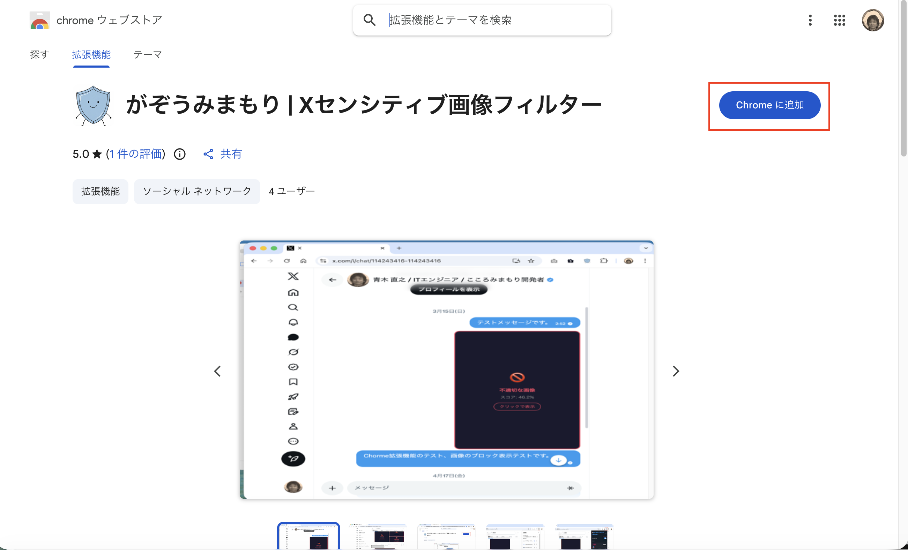
Bir onay penceresi gösterilir. Kuruluma devam etmek için düğmeye tıklayın.
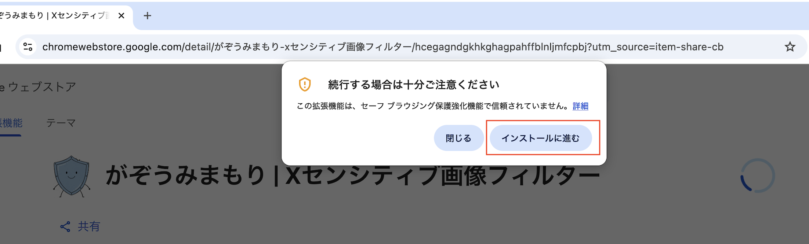
İzin istemini kontrol edin ve “Add extension” düğmesine tıklayın.
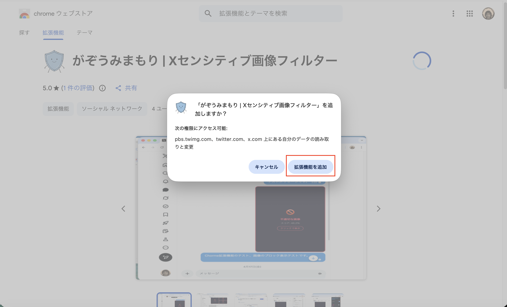
Ekranın sağ üst tarafında “Gazou Mimamori | Sensitive image filter for X” uzantısının Chrome'a eklendiğini belirten bir mesaj görünür.
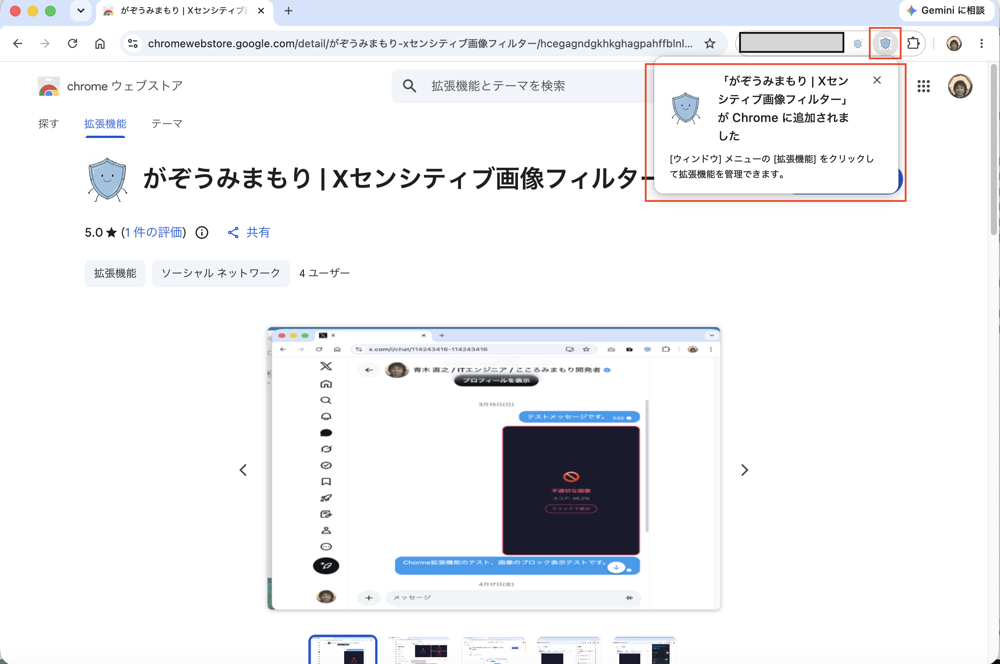
Sağ üstteki uzantılar düğmesine tıklayın, ardından simgesinin Chrome'da görünmesi için “Gazou Mimamori” yanındaki sabitleme düğmesine tıklayın.
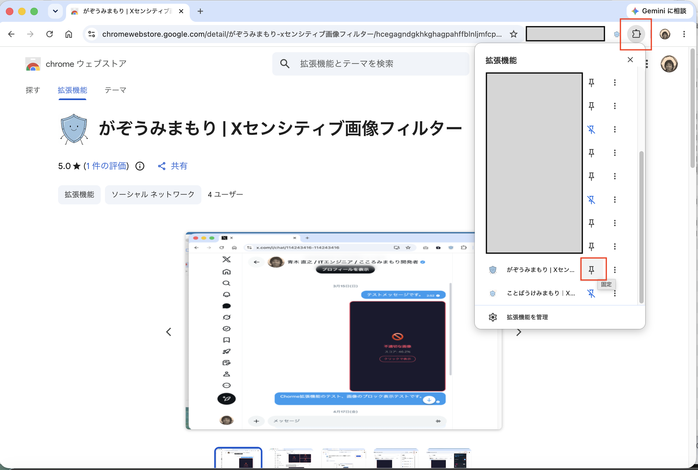
Simge Chrome'da göründüğünde Uzantı kullanıma hazırdır.
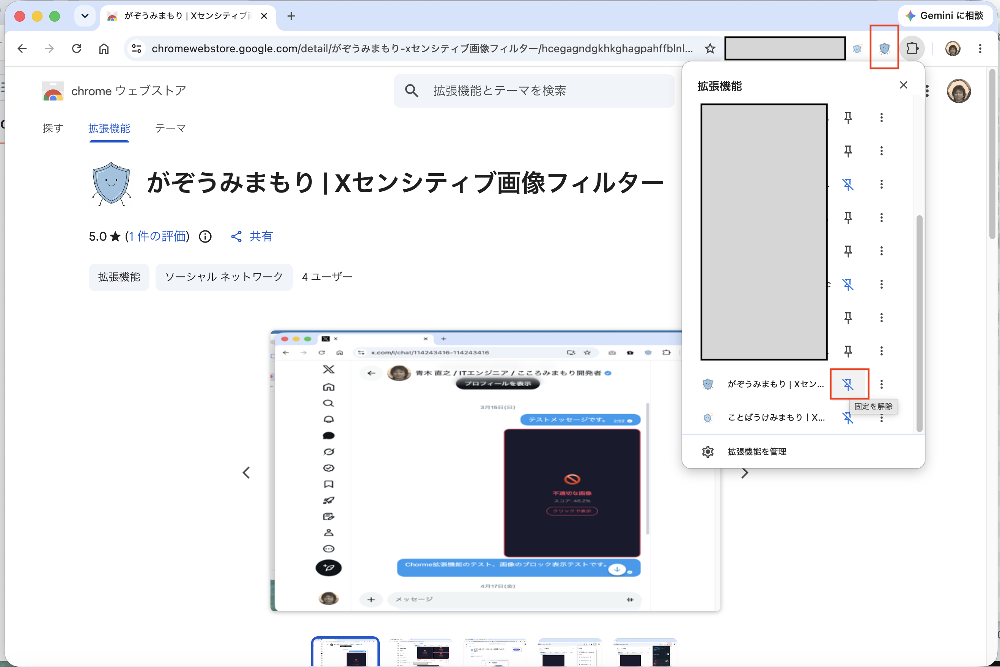
Uzantı, bir görüntünün rahatsız edici, hassas veya cinsel içerikli olma olasılığını 0 ile 100% arasında gösteren bir puan hesaplamak için AI makine öğrenimi modelini kullanır. Seçtiğiniz eşikten daha yüksek puana sahip görüntüler engellenir.
Kurulumdan hemen sonra eşik 30% (katı mod) olarak ayarlanır. Bu ayar mayo veya yüksek açıklık içeren görüntüleri de engelleyebilir.
Bu değer, AI tarafından hesaplanan ve bir görüntünün rahatsız edici, hassas veya cinsel içerikli olabileceğini gösteren olasılıktır. Puan yükseldikçe görüntünün engellenme olasılığı artar.
| Mod | Eşik kılavuzu | Davranış |
|---|---|---|
| Katı | 0 - 40% | Mayo veya yüksek açıklık içeren görüntüler dahil daha fazla görüntüyü engeller. Daha güçlü filtreleme istediğinizde kullanın. |
| Dengeli | 50% (standart) | Açıkça rahatsız edici, hassas veya cinsel içerikli görüntüleri engelleyen standart ayardır. |
| Yumuşak | 60 - 100% | Yalnızca güven düzeyi daha yüksek görüntüleri engeller. Yanlış pozitifleri azaltmak istiyorsanız kullanın. |
⚠️ Lütfen dikkat: Görüntüler AI tarafından otomatik değerlendirildiği için rahatsız edici veya cinsel içerikli olmayan görüntüler yanlışlıkla engellenebilir; bazı rahatsız edici veya cinsel içerikli görüntüler ise engellenmeyebilir. Hassasiyet kaydırıcısını ihtiyacınıza göre ayarlayın.
Hassasiyet ayarları panelini açmak için tarayıcınızın sağ üst kısmındaki uzantı simgesine tıklayın.
Chrome'un sağ üst kısmında, adres çubuğunun yanındaki 🛡️ kalkan simgesine tıklayın. Gerekirse uzantıya hızlı erişmek için yapboz simgesinden (🧩) Uzantı'yı sabitleyin.
Panelin üst kısmındaki “Filtering” anahtarının açık (mavi) olduğundan emin olun. Kapalıysa görüntüler engellenmez.
Display language, açılır pencereyi ve engellenen görüntü mesajlarını değiştirmenizi sağlar. Seçenekler “Auto”, “Japanese” ve “English”tir. Auto seçildiğinde, hem PC’nin hem de Chrome UI dilinin Japonca olduğu durumlarda Japonca, diğer durumlarda İngilizce kullanılır.
“Sensitivity” kaydırıcısını sola veya sağa sürükleyin. Sola (katı) taşımak daha fazla görüntüyü engeller. Sağa (yumuşak) taşımak görüntülerin engellenme olasılığını azaltır.
Panelin alt kısmında ● Active görünüyorsa ayar aktiftir. Yeni hassasiyeti uygulamak için X sayfasını yeniden yükleyin.
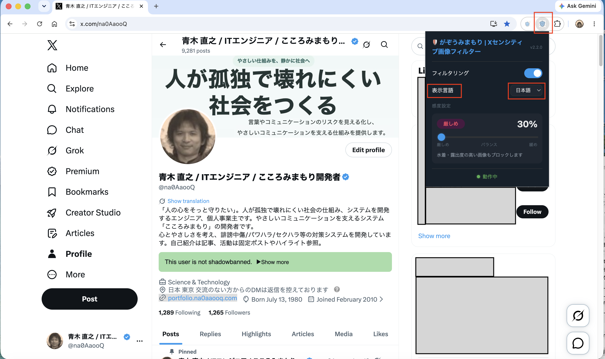
▲ Popup içindeki Display language seçicisi
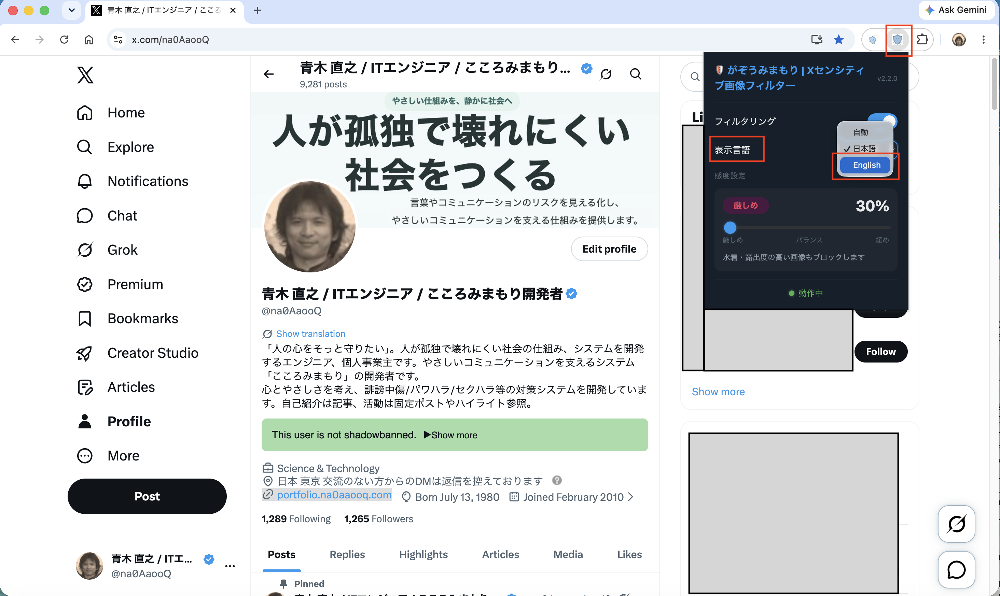
▲ Display language menüsünden English seçimi
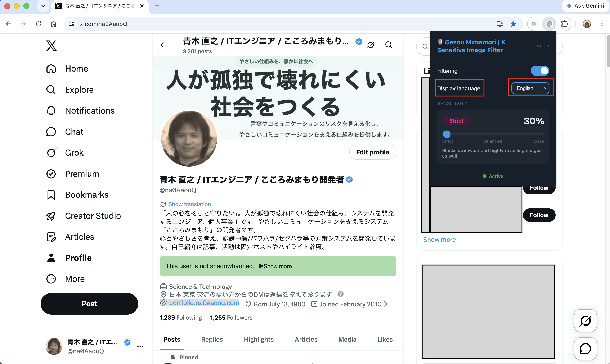
▲ İngilizce popup ayarları ekranı, katı mod 30%
X doğrudan mesajındaki bir görüntü rahatsız edici, hassas veya cinsel içerikli olarak değerlendirilirse aşağıdaki örnekteki gibi koyu bir kaplama ile değiştirilir.
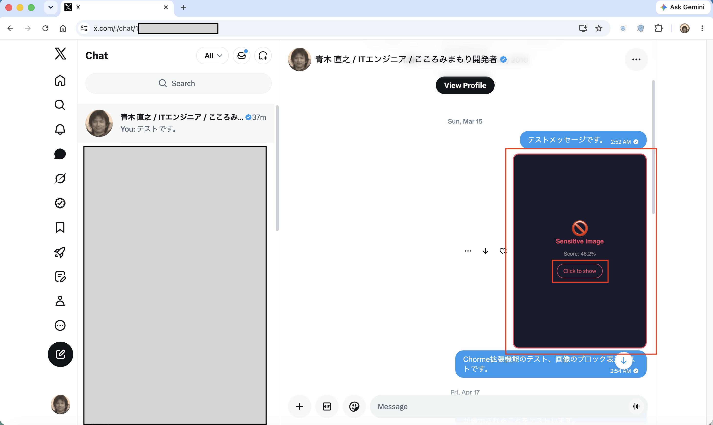
▲ DM ekranında engellenen görüntü örneği (puan: 46.2%)
💡 Göreceğiniz şey: İngilizce gösterimde, engellenen görüntünün üzerinde Uzantı “🚫 Sensitive image” metnini ve AI tarafından hesaplanan puanı gösterir. Puan, görüntünün seçtiğiniz hassasiyet eşiğini ne kadar aştığını gösterir.
Rahatsız edici, hassas veya cinsel içerikli olarak değerlendirilen görüntüler X zaman akışında, arama sonuçlarında ve diğer görüntü alanlarında da engellenir.
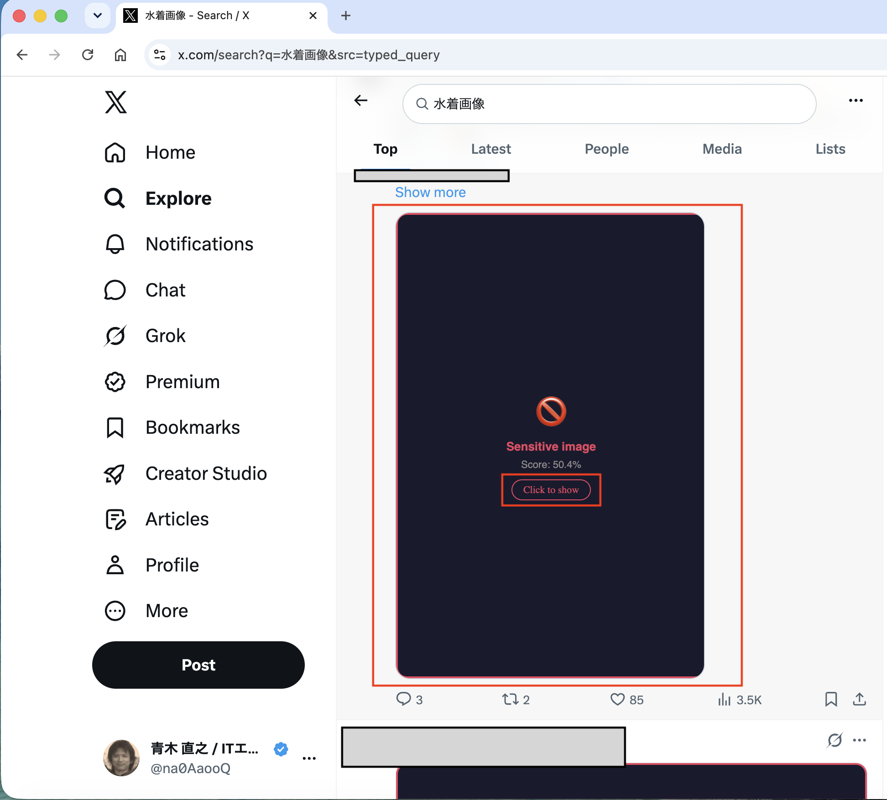
▲ Zaman akışı arama sonuçlarında engellenen görüntü örneği (puan: 50.4%)
💡 Desteklenen alanlar: Uzantı, ana zaman akışı, arama sonuçları, profil medya sekmeleri ve doğrudan mesajlar dahil X üzerindeki görüntü alanlarında çalışır.
Bir görüntü engellenmiş olsa bile, gerektiğinde onu tek tek göstermeyi seçebilirsiniz.
Rahatsız edici, hassas veya cinsel içerikli olarak değerlendirilen görüntülerin üzerindeki kaplamanın ortasında aşağıdakine benzer bir düğme görünür.
Düğmeye tıklamak yalnızca o görüntünün engelini kaldırır ve özgün görüntüyü gösterir. Diğer görüntüler etkilenmez.
“Click to show” geçicidir. Sayfayı yeniden yüklerseniz aynı görüntü eşiği hâlâ aşıyorsa tekrar engellenir.
⚠️ Yanlış pozitif fark ederseniz: Belirli bir görüntü yanlışlıkla tekrar tekrar engelleniyorsa, engellenme olasılığını azaltmak için hassasiyet kaydırıcısını “Yumuşak” yönüne taşıyın. → Kaydırıcıyı ayarlama yöntemi (Bölüm 4)
Uzantı hakkında sorularınız, geri bildirimleriniz veya yorumlarınız varsa lütfen Gizlilik Politikası sayfasındaki iletişim bilgilerini kullanın.
← Gizlilik Politikası'nı görüntüle